1. 上下文约束与需求对齐
00:00:15 ↗Matt Pocock · 主讲都准备好了吗？各位，房间已经坐满了，我们开始吧。我不想让大家为了一个随意定下的时间，再等二十五分钟。欢迎大家，我叫 Matt，是一名教师，现在大概可以说是教 AI 的。屏幕上有一个链接，里面是今天的练习。如果你还没打开，可以去看看。工作坊预计两小时，我们就从现在开始算。Mike，可以吗？
00:00:47 ↗Mike · 现场回应可以。
00:00:48 ↗Matt Pocock · 主讲好。我过去大约六个月一直在围绕一个观点工作：我们都认为 AI 是一种新范式。它显然正在改变很多东西，大家对此感兴趣，所以才来这里。但一谈“新范式”，我们就容易忘记，软件工程的基本功，那些与人合作时至关重要的东西，对 AI 同样有效。我明天的主题演讲会更深入地展开这一点。今天希望通过工作坊让大家看到这些原则，也看看我的判断是否成立。先举个手：有多少人用 AI 写过代码？很好，先别放下。
00:01:54 ↗Matt Pocock · 主讲让全世界看看我们的腋下。有多少人每天都用 AI 编程？继续举着。又有多少人曾被 AI 搞得很沮丧？很好，可以放下了，谢谢大家配合。我们还在向 Gielgud 副会场直播，不知道有没有人过去确认情况，但那边的朋友，我看见你们了。今天用在线问答。我有点讨厌普通问答，因为它不够民主，往往最爱发言的人才有机会。我们希望大家异步提交问题，并为彼此的问题投票，让整个房间都能看到最好的问题。比如有人问，为什么非得等到三点四十五分，房间都坐满、门都关了。我完全同意，所以我们现在就开始。
00:03:00 ↗Matt Pocock · 主讲先谈 LLM 的一些奇怪约束，因为我们的工作方法必须围绕这些约束设计。HumanLayer 的 Dex Horthy 提出过“聪明区”和“笨区”的概念。刚开始一段新对话、上下文还很少的时候，模型通常表现最好，因为注意力关系的负担最小。每添加一个 token，就像给足球联赛多加一支球队：需要安排的比赛迅速增加，近似按平方增长。token 之间有位置和语义上的注意力关系。大约到上下文的百分之四十，或者按我现在的经验，到十万 token 左右，就要注意了。
00:04:09 ↗Matt Pocock · 主讲不管标称窗口是一百万还是二十万，我观察到的分界大致都在这里。不断往同一个窗口里塞东西，模型就会越来越笨，开始作出愚蠢决定。有这种感觉的举个手。于是我们应该控制任务大小，让它始终留在聪明区，不要一口吃成胖子。这其实是老建议，Martin Fowler 的《重构》和《程序员修炼之道》都讲过：任务要小，人类开发者也会因为工作过大而崩溃、进入自己的笨区。但如何处理大任务？比如复制一家公司那么大的东西，怎样拆成能放进聪明区的小任务？〔原讲述末句口误说成“笨区”，此处按上下文保留其意图。〕
00:05:16 ↗Matt Pocock · 主讲一种自然做法，也是 AI 公司可能希望你做的，就是一直聊下去，进入笨区，每次请求都带着大量 token，然后压缩，再继续，再压缩。我觉得这效果不好，因为会不断留下“沉积物”，稍后再说。我之前的办法是多阶段计划：有个很大的任务，就拆成几个阶段，每一阶段都在聪明区完成。用过多阶段计划的举个手，很常见。我直到去年十二月大致都这样做。但有经验的开发者看到它就会说，这不就是一个循环吗？
00:06:20 ↗Matt Pocock · 主讲阶段一、二、三、四，为什么不直接写成阶段 N？后台放着计划，循环执行直到完成。听过把 Ralph Wiggum 当成软件开发方法的举个手；没听过的呢？这就是所谓 Ralph 的想法：先用 PRD，也就是产品需求文档，描述旅程的终点，然后每次让 AI 做一个小改动，不断接近终点。Ralph 还可以，不过我个人希望多一些结构。这就是从“聪明区”约束推导出来的第一部分。
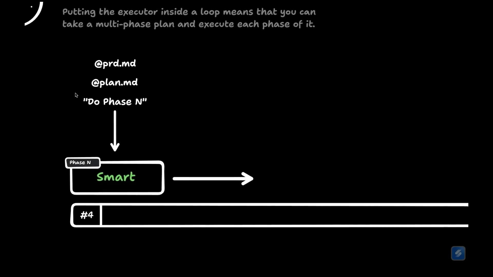
00:07:21 ↗Matt Pocock · 主讲另一个约束是，LLM 像《记忆碎片》里的主人公，不断遗忘，重新回到初始状态。我拉一下图。我确实应该用幻灯片，但我更喜欢在无限的 tldraw 画布上随便滚动，谢谢 Steve。每一轮会话基本都会经过相同阶段：先是系统提示词。灰色框是始终占据上下文的东西，应当尽可能小。我见过有人塞二十五万 token，一开始就进入笨区，根本还没干活。接着蓝色部分是探索代码库，然后实现，最后测试、确认工作正常，运行反馈回路。
00:08:34 ↗Matt Pocock · 主讲这些阶段熟悉吗？清空上下文，就直接回到系统提示词，之前的东西全部消失。听过压缩的举手。有些人没听过，我演示一下，让大家处于同一起点。我刚才和模型聊了一阵，讨论要做的东西。后排看得清字号吗？我再放大一点。今天用 Claude Code 演示，但你不需要非用它不可，有时候不用 Claude Code 反而挺好。
00:09:32 ↗Matt Pocock · 主讲它正在问我接下来做什么。我非常建议加上这条小状态栏，显示正在使用的准确 token 数。我在 AI Hero 网站上有文章，可以照着配置。屏幕放大后有点抖。这是每次编程会话都必须知道的信息：用了多少 token，离笨区还有多远。现在有两个选择：清空，回到没有对话历史的状态；或者压缩，把目前不算长的对话挤进更小的空间。图上对应的是，把整个会话变成一份历史摘要，留下发生过什么的书面记录。
00:10:36 ↗Matt Pocock · 主讲不知道为什么开发者都喜欢压缩，我却很讨厌它。我更喜欢模型像《记忆碎片》里的主人公，因为清空后的起点每次都完全相同。如果围绕这个稳定状态优化，就很有优势。这就是两个约束：聪明区与笨区，以及不断重置的记忆。下面进入第一个练习。我在上面演示，大家也可以自己操作。刚才只是讲了一段，现在实际写点代码。迟到的朋友和副会场的朋友，请打开屏幕上的链接。
00:11:35 ↗Matt Pocock · 主讲链接里有练习，可以克隆仓库，也可以只看我演示。我为课程做了一个课程管理平台，面向讲师和学生，类似 CMS。今天就在里面开发一个功能，从模糊想法，到 PRD，再到实现，希望大家能带回自己的工作。先用一个我很喜欢的 Skill：Grill Me，意思是“彻底盘问我”。它很小，却能防止与 AI 合作时一个主要问题：理解不一致。我在反对的是一种“specs-to-code”的思路。听过这个词吗？它未必算运动，只是大家在这么说。
00:12:53 ↗Matt Pocock · 主讲这种思路是，想写程序或应用，就先写一份规格文档，再让 AI 把文档转成代码。如果结果有问题，也不看代码，而是回去改规格，不断重复。换个名字，还是 vibe coding：忽略代码，只编辑规格，期待最终能用。我认真试过，效果很差，因为你必须掌握代码，理解里面有什么，并塑造它。代码才是你真正作战的地方。现在看练习，请打开 Grill Me Skill 页面。仓库根目录有一条朋友发来的 Slack 消息，文件在哪里来着？
00:14:08 ↗Matt Pocock · 主讲叫 client-brief.md，来自 Sarah Chen。不知道为什么 Claude 总喜欢起这个名字。她说，Cadence 课程平台的留存不好，学生注册、学几节课就流失，希望加入游戏化功能。面对这样的想法，要把它变成现实。假设 Sarah 是客户，预算紧、时间少，你会怎么做？有多少人先进入计划模式？有人有别的方法吗？第一步会做什么？
00:14:55 ↗现场补充〔现场回答前半句听辨不清。〕
00:14:55 ↗Matt Pocock · 主讲抱歉，你说什么？
00:14:56 ↗现场补充先进一步询问，澄清目的，以及我们现在的情况。
00:15:00 ↗Matt Pocock · 主讲对。假设 Sarah 去度假了，只留下这条消息，你必须在离开前推进。我首先会用这个 Skill。清空上下文，把之前的会话移开，输入斜杠调用 Grill Me，再把客户简报传进去。大家知道“斜杠加名字”是在调用 Skill 吗？现在模型只有两样东西：Skill，以及我想做什么的描述。几乎每项 AI 开发工作，我都这样开始。它探索代码库时，我给大家看看仓库里这份 Skill 的内容。
00:16:17 ↗Matt Pocock · 主讲它非常短：“持续追问这份计划的各个方面，直到我们达成共同理解。沿设计树逐条深入，依次解决依赖关系；每个问题都给出推荐答案，一次只问一个问题……”我发现 AI，尤其在计划模式里，总急着交一份计划，觉得信息差不多就开始写。但那不是我真正需要的。我一直找不到准确说法，后来看到 Frederick P. Brooks 在《设计原本》里谈“设计概念”：几个人共同创造新东西时，需要共享对它的整体构想。这才是我想和 Claude 建立的东西。
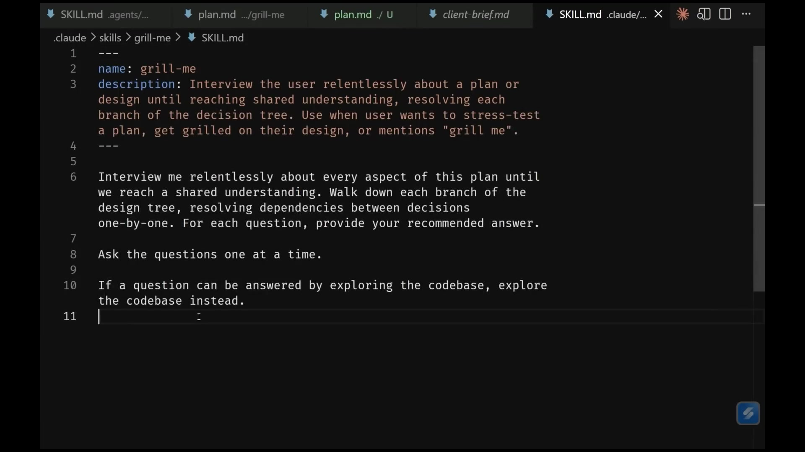
00:17:23 ↗Matt Pocock · 主讲我需要共同理解，不是一个产物，也不是一份计划。Grill Me 是个很有效的方法。现在它探索完了，调用了一个 Opus 子 Agent，消耗九万三千七百 token，终于问了第一个问题。注意，虽然子 Agent 用了很多 token，主会话并没有增加那么多。子 Agent 是另一次 LLM 调用，拥有隔离的上下文。你委派任务，它探索大量材料，再把重要发现以摘要形式反馈给编排它的父 Agent。
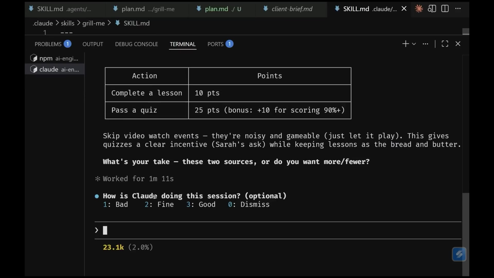
00:18:34 ↗Matt Pocock · 主讲第一个问题是积分经济：哪些行为得分，分别多少？如果不熟悉仓库，你可以继续追问，理解现有系统。我自己写的仓库，所以很熟。它建议先保持简单，从两类积分来源开始。好处是不只有问题，还有建议，而它的建议经常不错。比如它建议不把“观看视频”事件作为计分依据，因为噪声大、容易刷；以完成课程为核心。我同意，就直接告诉它这样很好。通常我会语音输入，像聊天一样沟通，但这台笔记本比较新，没把听写软件调好，Windows 真糟糕。
00:19:41 ↗Matt Pocock · 主讲接着它问，积分是否追溯？系统里已经有带完成时间的学习进度记录。要不要为历史完成记录补发积分？这是个棘手但必须对齐的问题，我没想过，Sarah 当然也没想过。我们投个票：支持补发的举手，不支持的举手。很多人没表态。我懒，就采纳推荐选项。注意我一直留在循环里，它的问题很快，我不需要等得去刷 Twitter。然后是等级，升级曲线是什么样？看起来差不多。
00:20:46 ↗Matt Pocock · 主讲大家可以照这样和 AI 逐项达成理解。Grill Me 可能持续很久，我被问过四十、八十个问题，有人甚至被问一百个，一坐就是一小时。最终留下的对话历史，就是共同设计概念的一份有价值的记录。也可以先和领域专家，比如 Sarah 开会，把会议转录交给你们使用的会议工具，再输入盘问会话，检查原本没意识到的假设。这样就能把外界输入逐步澄清和验证。我希望把这轮做完，但也不想让大家看我和 AI 聊上一千天。
00:21:59 ↗Matt Pocock · 主讲我先回答“是”，看看后面怎样。大家可以本地试，我趁这段时间开始问答。有人说外面太吵，能否关门或调大麦克风？Mike，门能关一下吗？哦，已经关了，Mark 回复了。还有人问空调，应该有吧。大家没被灯照，我在上面都快烤熟了。不做练习的朋友，可以去 Slido 看看问题、投投票。我再回答几项：连续学习是否得分？连续记录单独计算；游戏化界面放哪里？放仪表盘。
00:23:19 ↗Matt Pocock · 主讲我快速过一下。有人问，是否试过 SpecKit、OpenSpec、Taskmaster，和 Grill Me 相比会不会更啰嗦或更有结构？这些框架很多。但现在还没有明确赢家，方法不断变化，我认为应尽可能掌握自己的计划工具链。学生常过度依赖某一套工具，一旦出问题，因为不拥有它，也观察不到全过程，就只会觉得工具很烂。如果你控制整个过程，至少知道可能怎样修。虽然我也给了大家一套方案，但我相信控制反转：最终应该由你掌握工具链。有人说什么？刚才有点听不清。
00:24:42 ↗现场补充反馈一下，底栏有四个选项，现在它在等你选择、提交那条消息。〔现场原话部分不清，按可辨内容保留。〕
00:24:48 ↗Matt Pocock · 主讲谢谢，抱歉。怎么，你们不愿意给 Claude 一点好反馈吗？下一个问题：Grill Me 里很多问题该由产品负责人回答，不一定适合开发者，大团队里谁来用？有多少人做过结对编程，又有多少人和 AI 一起结对过？我觉得人与人结对时带上 AI 很好，多了一个会不厌其烦追问的参与者。答不上产品问题，就让开发者、领域专家和 AI 待在同一个房间；如果是实现问题，就让你、另一名开发者和 AI 一起讨论。
00:25:42 ↗Matt Pocock · 主讲团队可以一起回答这些问题。稍后会看到实现阶段如何大幅加速，但真正关键、需要人作出的决定，可以让很多人一起参与，类似带 AI 的集体编程。最喜欢什么元提示工具？我想前面回答过。没有空调？那就接受吧。有人问，盘问之后怎么把对话变成资产，马上会讲。还有人说，干脆把盘问放进 Ralph 循环。这恰恰不行。我把 AI 时代的任务分两类：一类必须有人在环，比如当前这轮盘问，甚至可以有很多人参与。
00:26:53 ↗Matt Pocock · 主讲另一类是 AFK，也就是人可以离开键盘的任务。实现可以变成 AFK，但规划、建立共同理解必须有人在环。我还是得继续回答。为了工作坊赶进度，我让它一次列出所有推荐答案，多承担一点。另一个问题是产品经理等非开发角色该不该 vibe coding，我稍后再回头说，先留个悬念。为什么不用 Ask User Question 的选择界面？Claude Code 确实能调用它，我演示一下。但那个界面有很多问题，我不喜欢。
00:28:17 ↗Matt Pocock · 主讲你看，我在用 Claude，但并不怎么喜欢它。这套方法可以自由选择工具。Ask User Question 第一次看很舒服，用久就会发现各种问题。它又返回什么了？天哪。趁它运行，我继续解释。Grill Me 是在弄清整个任务的形状。要把这些讨论变成 AI 可以执行的行动，必须先明确终点。我们需要两份基本文档：首先有一份文档，记录目的地。
2. PRD、垂直切片与任务依赖
00:29:27 ↗Matt Pocock · 主讲亮度不太够，再调一下。我们需要一份记录“终点”的文档，以及一份记录“旅程”的文档：前者说明有哪些用户故事、什么叫完成；后者说明怎样拆分工作。盘问结束后，它回答了自己提出的二十二个问题，这很能代表一次盘问的样子。目前用了二万五千 token，其中很多是金子，我想保留下来，用一份终点文档概括。这就是下一项练习。
00:30:36 ↗Matt Pocock · 主讲我们要写产品需求文档，也就是 PRD。它的职能就是描述终点，具体长什么样没那么重要，可以用我喜欢的格式，也可以用公司的格式。本质上，是总结已经形成的共同设计概念。我调用 Write a PRD。这个 Skill 首先要求用户详细描述问题；不先盘问也能直接用，但我喜欢先 Grill Me，再写 PRD。接着探索仓库，我们已经做过；然后持续采访用户，相当于又一次盘问，最后按模板组织文档。
00:31:56 ↗Matt Pocock · 主讲模板在仓库里，包括用户面对的问题、解决方案、一组用户故事。如果做过开发，应该见过类似东西，可以用 Cucumber 这样的语言写，也可以直接自然语言描述。然后记录已经作出的实现决定，以及很重要的测试决定。现在运行完了。又是 Windows，我大概就是喜欢挑战才买它。它首先给我一组准备修改的模块，这不是偶然的：现在我们有想法，也对想法做了规格说明。
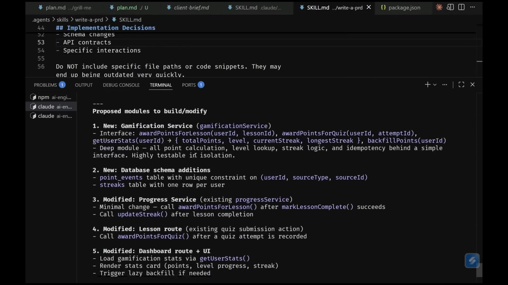
00:33:03 ↗Matt Pocock · 主讲我们已经理解要做什么，接着必须考虑代码。我不是让规格自动变代码、从此忽略实现，而是全程记着代码结构。我喜欢先看打算改哪些模块，稍后会解释怎样持续设计系统。它建议给游戏化服务写测试，因为那是包含实质逻辑的深模块，其他模块看起来也对。我批准，让它输出 PRD。为方便工作坊，我配置成把事项放在本地 issues 目录。平常我会用自己的工作仓库，屏幕上这个 github.com/mattpocock/course-video-manager。
00:34:15 ↗Matt Pocock · 主讲这是我平时录视频用的应用，查过统计，可能已经录了一千条视频，挺夸张。这里有七百四十四个关闭的 Issue，基本上是我写过的 PRD 和实现事项。现在让它把这条生成出来。文档包含问题、解决方案、十八条用户故事、等级阈值等实现决定，已经足够说明我们要去哪。我们通过盘问建立理解，再把理解保存成一份资产。大家觉得我应该审阅这份文档吗？举个手。
00:35:19 ↗Matt Pocock · 主讲我其实不看。因为这时读它，到底是在测试什么、试图发现什么失败模式？LLM 很擅长总结。盘问已经让我们共享设计概念，再读 PRD，主要是在检查它的总结能力，所以我通常不读。感觉大家有很多问题，先问答，然后休息五分钟，让我歇歇嗓子，也让大家赶上练习。有人问我不喜欢 Claude Code，那喜欢什么？听过“民主是最坏的制度，除了其他所有制度”这句话吗？我对 Claude Code 的感觉就是这样。
00:36:35 ↗Matt Pocock · 主讲有人问，现在只需说“修好 TypeScript，别犯错”，开发者还有必要深入理解 TypeScript 吗？题目措辞我没完全看懂，但意思大概明白。代码一直很重要，糟糕的代码库会造就糟糕的 Agent。给它垃圾代码库，输出也会差。深入理解工具、深入理解代码，会让你成为更好的开发者，更充分地使用 AI。下一个问题：现在有一百万 token 窗口了，是否值得利用？提问者感觉笨区最近没那么笨了。这又回到开头的讨论。
00:37:44 ↗Matt Pocock · 主讲我用二十万窗口录好 Claude Code 课程，发布当天就宣布了一百万窗口。我的看法是，它主要给你发了更多笨区。大窗口对检索有用，比如塞进五本《战争与和平》，再查角色相关内容；我一时连角色名都想不起来，不该拿它举例。检索可以，编程效果没那么好。按我当时的经验，聪明区大概仍是十万 token。它会扩大，那会是很好的改进。现在休息五分钟，让我缓口气，大家活动、喝水。我看到有人困了，希望下半场保持清醒。
00:38:45 ↗Matt Pocock · 主讲五分钟后见。好，我们已经有 PRD 这份终点文档，我不会去读。继续前看看问题。有人问，在今天重新发现软件工程师的角色，有哪三个最值得推荐的“discipline”？我听说跆拳道不错。说实话，不知道怎么回答，谢谢你提问。
00:39:20 ↗现场补充水管工。
00:39:21 ↗Matt Pocock · 主讲什么？
00:39:22 ↗现场补充水管工。
00:39:23 ↗Matt Pocock · 主讲水管工不错。我雇过的水管工通常也不是很“守纪律”，不知道算不算这个词的另一层意思。回到工作：现在知道终点了，如何到达，又如何拆分，避免任务进入笨区？过去可能直接让 Claude 给个多阶段计划。但我现在更喜欢把它变成看板。不了解看板的举手。看板就是一组有阻塞关系的任务卡，像贴在墙上的工单。敏捷开发以来，大家已经这么工作很久了。看它这里提出的拆法。
00:40:42 ↗Matt Pocock · 主讲它分了五项：先做数据库结构和游戏化服务，没有前置阻塞，类型标为 AFK，可以交给 Agent 自己完成；再做连续学习记录；把积分和连续记录接到课程及测验完成事件，这项依赖前两项；历史补发只依赖第一项；最后一项依赖前面全部。你可能问，这看起来不错，为什么不能直接让 AI 决定事项，非要我参与审阅？因为这里很快、成本很低，我能立即发现问题。设计旅程时，有一个非常重要的方法。
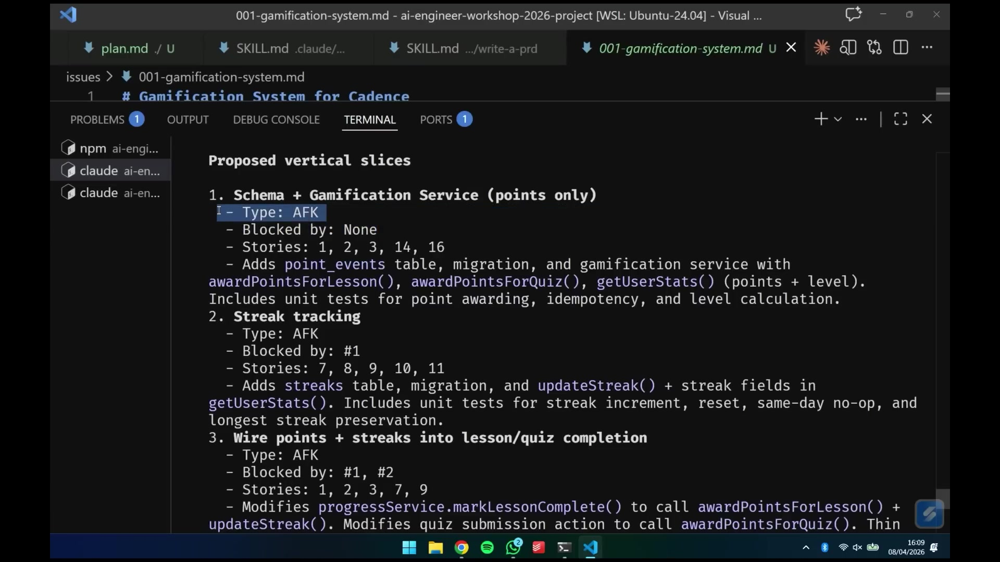
00:41:57 ↗Matt Pocock · 主讲它来自《程序员修炼之道》，叫“曳光弹”，或者“垂直切片”。这个概念改变了我让 AI 自己选择任务的方式。系统有不同层，可能是不同部署单元：数据库、靠近数据库的 API、在 CDN 上的前端；单元内部也有层。这个项目有测验、团队、用户、优惠券、课程等服务，彼此依赖。我发现 AI 特别喜欢横着写：第一阶段做全部数据库结构和相关工作。
00:43:08 ↗Matt Pocock · 主讲第二阶段做全部 API，最后再叠前端。谁能说说这有什么问题？
00:43:21 ↗现场补充没有完整的反馈回路。
00:43:23 ↗Matt Pocock · 主讲完全正确。直到第三阶段开始甚至完成，你才知道之前的工作有没有用，才开始测试各层是否能一起运行。此前没有集成系统可测。因此要设计跨越所需各层、很薄的一条功能切片。第一阶段里就能对完整流程得到反馈，AI 也能受益。在 PRD to Issues Skill 中，我要求把 PRD 拆成可独立领取的垂直切片，也就是曳光弹，并写入本地 Markdown。先找 PRD，新会话则探索代码库，再拟定这些切片。曳光弹这个比喻来自高射炮。
00:44:36 ↗Matt Pocock · 主讲这是个有点暴力的比喻：夜间对天射击，用普通子弹看不见弹道，不知道打向哪。曳光弹带着发光材料，隔若干发就能在空中看见轨迹，于是可以修正瞄准。开发也是提高反馈密度，尽快看到正在构建的东西。否则 AI 一直到后期都在盲写。Skill 里有切片规则、向用户提问、创建事项文件。但即便写了这些规则，AI 仍先建议单独创建游戏化服务。
00:45:34 ↗Matt Pocock · 主讲我觉得这还是横向切片。尤其第一条，应当包含必要的数据库结构改动、新服务，以及前端最小的可见呈现。我要它穿过各层，而不是只完成某一层。大家明白吗？
00:45:54 ↗现场补充明白。
00:45:54 ↗Matt Pocock · 主讲我要训它一句“坏孩子”，开玩笑，别浪费 token。我直接说“第一条切片太横向了”，看它能不能领会。老软件工程书很有价值，因为我们现在要用自然语言表达最佳实践，而二十年前的书已经把话说清楚了，简直是提示词金矿。但即便如此，模型也不会次次完美。新提议是“完成课程获得积分，并在仪表盘显示”。这就是很好的垂直切片：涉及不少故事，却能看见结果，AI 再在其上逐渐加功能，比原方案好。
00:47:01 ↗Matt Pocock · 主讲我们又往前走了一步。跟着做的朋友，应该也能开始形成这种判断。趁我创建 GitHub Issue——不，这次是本地事项——再回答几个问题。什么时候不用 Windows？永远不会。Grill Me 怎么知道什么时候停，会不会一直问？确实可能很密集，但 Skill 是你自己的，可以调。如果它不停轰炸，就让它收一点，设一些停止点。如果这经常成为失败模式，就修改 Skill。
00:47:55 ↗Matt Pocock · 主讲有人问，我还用“极其简洁，为简洁牺牲语法”这条指令吗？这是五个月前给过的技巧，放进 CLAUDE.md，让计划更紧凑、更易读。我现在其实很少用 CLAUDE.md，这里建个示例。“和我说话时，为简洁牺牲语法。”以前需要读计划时，它很有用。但后来我改用盘问：我不想读计划，我想和模型达成理解，希望它积极追问。既然不再阅读计划，也就不再需要文档极度简洁。对我而言，计划和终点文档描述目标即可。
00:49:20 ↗Matt Pocock · 主讲有人问，产品经理和其他角色未来会怎样融合、相互对峙。我不知道，我不是时评专家。几次批准之后，我们应得到一组可独立领取的事项。看板大致是一个依赖网络：这项必须在那项之前，而另一些可以在共同前置项完成后同时开展。这就允许多个 Agent 并行。大家做过 Agent 并行工作的举个手。
00:50:30 ↗Matt Pocock · 主讲也就是把计划变成有向无环图。举个简单例子：第一阶段做一项，第二阶段同时做两项，第三阶段再做收尾。这还只是一个计划，如果多个计划同时运行，就有很好的并行空间。我因此更喜欢看板，而不是只有编号阶段的串行计划，后者基本只能交给一个 Agent 循环执行。现在事项在哪？糟了，它真在 GitHub 上创建，我不要那样。请放进 issues。
3. 实现循环、测试与人工验收
00:51:58 ↗Matt Pocock · 主讲刚才说得还不够精确：请创建本地 Markdown 文件，并引用本地版本。抱歉。到这里，我们就有本地事项可以逐个循环实现，人类终于暂时离开循环。回顾一下：想法，盘问，中间也可能有研究与原型；然后是描述终点的 PRD，再变成看板。这些阶段都由人审阅。进入实现，才退后，让一个或多个 Agent 消化看板。虽然前面花了很多时间规划，但也为它排好了大量工作，相当于白班和夜班。
00:53:25 ↗Matt Pocock · 主讲人上白班，把事情规划、准备好；AI 上夜班，可以 AFK 工作。最后一个练习就是运行 AFK Agent。我把它叫 Ralph，因为本质上是 Ralph 循环。仔细看提示词：它要运行 Claude，鼓励它无人值守完成工作，开头提供 issues 里的本地事项文件。打开仓库的 once.sh，它只是个 Bash 脚本，把所有 Markdown 事项读进一个本地变量。
00:54:41 ↗Matt Pocock · 主讲issues 变量就包含整个待办列表。接着取最近五次提交，稍后解释原因；再读取提示词，以 acceptEdits 权限模式运行 Claude Code，把这些信息一并传进去。这就是一个极简实现器。不过 once.sh 只运行一次，不是循环。真正 AFK 版本更复杂，而且关键是放进 Docker 沙箱。今天不让大家现场装 Docker、拉镜像，否则会拖垮会场 Wi-Fi。我来演示，大家不用自己运行那个版本。
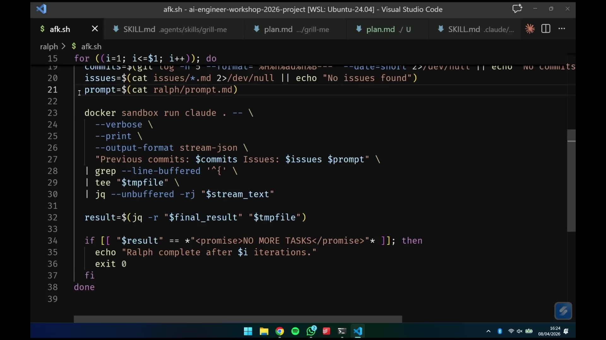
00:55:44 ↗Matt Pocock · 主讲单次版本是将来循环反复执行的一个迭代，也可以看成有人在环的版本。先多次单独运行很重要：观察 Agent 怎么行动，发现问题，再调整提示词。这里写的是：开头传入本地事项，只做 AFK 类型；如果所有 AFK 事项都完成，就输出“没有更多任务”的标志。下一步是选择任务。前面所有准备，都是在整理一份夜班 Agent 可以领取的待办列表，而 Ralph 提示词还要规定下一个好任务是什么。
00:56:56 ↗Matt Pocock · 主讲稍后会展示并行，但现在一次只运行一个 Agent，先用顺序循环入门。优先级依次是关键缺陷、开发基础设施、曳光弹切片、快速打磨和重构。完成任务的指令则很简单：探索仓库，用 TDD 实现，再运行反馈回路。现在本地事项已经生成，我取消当前会话、清空，运行 Ralph 的 once.sh。跟着做的朋友可以同样操作。它带着提示词和全部事项运行 Claude，我们趁它工作继续讲。
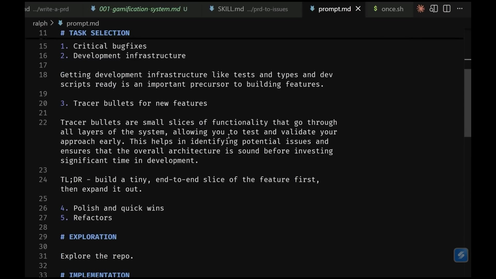
00:57:59 ↗Matt Pocock · 主讲大家可能想问，为什么这样配置，为什么几乎把写代码都交给 AI。它启动时再做一轮问答。如何保留盘问时作出的否定决定，以及为什么不做？很简单，Write a PRD 模板底部有“范围之外”，记录本次不解决什么，这对定义完成很重要。还有前端工作流的问题，稍后回答。另一个问题是，Agent 写得比人审得快怎么办，又怎样正确隔离、并行使用多个 Agent？这里其实是两个问题。觉得现在比以前做更多代码审查的举个手，确实如此。
00:59:18 ↗Matt Pocock · 主讲我觉得没有办法避免这一点。
00:59:23 ↗Matt Pocock · 主讲我们把代码实现交给 Agent，但这里唯一能 AFK 的主要是实现，后面仍要人工验收和代码审查。如果一个循环连续实现四条事项，就很难同时遵守“PR 应小而独立”。要保持小 PR，可能就得减少循环次数、缩短循环；或者做一大串堆叠 PR，但那听起来也很糟，仍然有很多代码要分别审。我坦白说，还不知道答案。我们可能需要准备接受更多代码审查，这个结论并不好玩，我也不乐于这么说，但方向可能如此。现场再来几个问题吧，不用麦克风，举手就好。
01:00:32 ↗现场补充从想法到验收、代码审查，这个流程看起来很线性。但现实更乱：多个想法同时推进，没人掌握全貌，做到一半又插进一个缺陷。你怎样处理这些混乱，让反馈更及时？
01:00:53 ↗Matt Pocock · 主讲好问题。也就是，这对个人开发者看起来很好，团队怎样实施，怎样收集团队反馈？从想法到终点的探索，本来就该和团队一起做。盘问时如果有答不上的问题，就把团队拉进来。可能要先做原型，让领域专家实际摆弄；也可能需要集成第三方库，先研究、来回比较服务，甚至根据新信息回到最初的想法阶段。
01:01:51 ↗Matt Pocock · 主讲一直到 PRD 和执行旅程，这些都是团队参与、共享、争论、征求意见的资产。不断讨论，直到搞清要去哪，然后才拆看板、做实现。前面这些阶段完全可以反复来回，并不是不可回头的直线。这样能理解吗？
01:02:20 ↗现场补充那原型不也需要 PRD 吗？
01:02:23 ↗Matt Pocock · 主讲抱歉，再说一次？
01:02:24 ↗现场补充做原型时，不也想先有一份 PRD 吗？
01:02:26 ↗Matt Pocock · 主讲也就是，做原型也要走整套流程吗？顺便回答前端工作流。前端非常依赖人的眼睛，需要人持续看它是否好看。AI 能读代码，但前端是多模态的。可以接 Agent Browser 或 Playwright MCP，让它看界面和图像，可按我的经验，它当时还不擅长在成熟代码库里做出漂亮前端，虽然能吐出一个页面。更好的用法是：“我想看看界面可能是什么样，请在一条可丢弃的路由里生成三个能切换点击的原型，让我比较。”
01:03:32 ↗Matt Pocock · 主讲再把选中的原型、人的反馈带回盘问会话。原型本来就是探索性的、会有些乱，它的任务是在早期提供反馈。前端可以这样做，软件架构也可以这样探索。再来一个问题。
01:03:52 ↗现场补充你的系统怎样遵守既有架构、设计、API 契约，以及整个大系统里的安全等各种约束？
01:04:05 ↗Matt Pocock · 主讲这个问题内容很多。也就是，怎样符合现有架构，怎样让结果遵守代码库的编码标准？
01:04:16 ↗现场补充是的，架构、API 设计，以及约束方案的安全规则。
01:04:22 ↗Matt Pocock · 主讲我稍后会回答。现在实现器还在探索阶段，想不想直接开 AFK 版本呢？它会先探索仓库，再按要求实现。趁它运行再来一个问题。
01:04:52 ↗现场补充为什么不在实现之后、人工参与之前，先安排 AI 做一次 QA？
01:04:58 ↗Matt Pocock · 主讲也就是为什么不让 AI 测自己的代码？刚才一瞬间术语过载了。当然可以，而且应该把自动审查作为实现流水线的一部分。现在它已经理解仓库，在评估事项，准备做第 02 项。token 相对便宜，AI 也很擅长审查，所以人工验收前，让它先检查代码，能抓到很多问题。不过如果实现已经用掉大量上下文，再在同一会话末尾审查，就会在笨区里做审查。
01:06:05 ↗Matt Pocock · 主讲结果是，审查者比实现者还笨。应该清空上下文，让审查在自己的聪明区开始。现在它正在生成数据库迁移，代码出来了，正好讲 TDD。TDD 是测试驱动开发，我发现它对充分使用 Agent 极其重要。它遵循“红—绿—重构”：先写一条会失败的测试，再实现代码让测试通过。仓库里有一个 Skill，专门教 AI 怎样做这个过程。
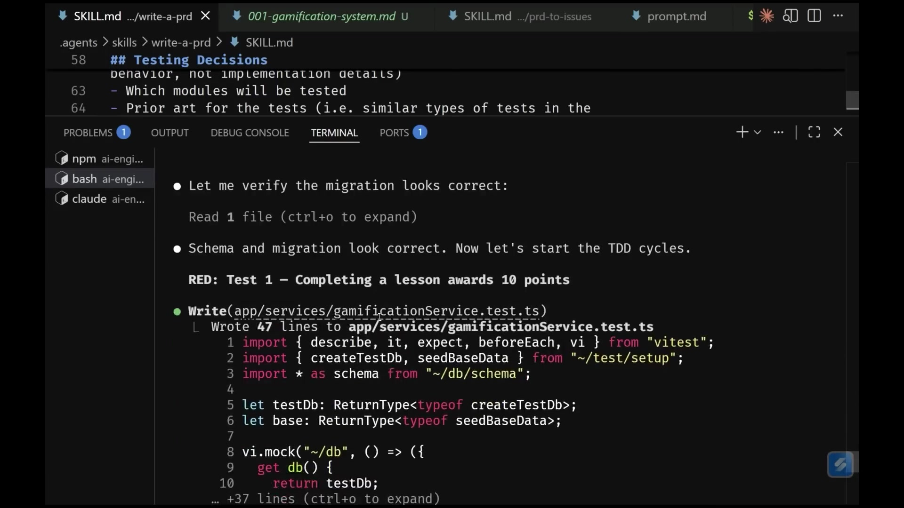
01:07:27 ↗Matt Pocock · 主讲这不仅增加测试，而且往往增加的是好测试。现在它在游戏化服务里复用已有机制创建测试数据库；模块还不存在，测试失败，确认红灯，然后写实现、再运行到通过。有多少人遇到 AI 写很差的测试？它常想作弊，先横着写完全部实现，再统一补一层测试。先测试再实现就更难作弊，因为测试先建立了观测行为的手段。这里批准它使用 npx vitest。〔官方讲稿将命令误记为“NPXB text”，按测试工具名称校正。〕只要能采用 TDD，它就非常有效，我甚至会围绕更好地使用 TDD 来组织整套工作方式。
01:08:36 ↗Matt Pocock · 主讲这里太热了，大家看起来也困了。再休息五分钟吧，大约六七分钟后回来，然后讲怎样组织模块和代码库。刚才我继续操作，已经得到一次提交，第二条事项完成了，末尾有工作摘要，这就是 Ralph 一轮结束的样子。因为设计了反馈回路和曳光弹，并要求最后交出可验收的东西，现在就有内容可以测。看别人验收不怎么有趣，但我们试一下。先回顾它做了什么：给仪表盘加内容，然后运行反馈回路。
01:09:47 ↗Matt Pocock · 主讲它跑了测试和类型检查。这些反馈回路是让 AI 产出合理代码的必要条件；没有它，就是盲写。代码库没有反馈回路，很难得到像样结果，反馈回路质量往往决定 AI 编码质量的上限。输出不好，常常需要先改反馈。这里运行 npm run test 和 npm run typecheck，发现一个类型错误，用 TypeScript 的方式修好，再跑测试通过。你看，为什么我不再教 TypeScript？AI 都会了，开个玩笑。现在仓库有二百八十四条测试。前端这里仍然不好测，主要测的是服务。
01:11:09 ↗Matt Pocock · 主讲现在有游戏化服务及对应测试。若做代码审查，我会先看测试是否真的在测合理行为，再看实现有没有离谱的地方。但最关键还是打开仪表盘。我以学生 Emma Wilson 登录，进入 TypeScript 入门课程，点击完成课程。出错了，大概是 SQLite 缺少相应表，报的是 point_events。这个表名有点奇怪，不知道它怎么想的。我先暂停，执行数据库 migrate 还是 push 来着？
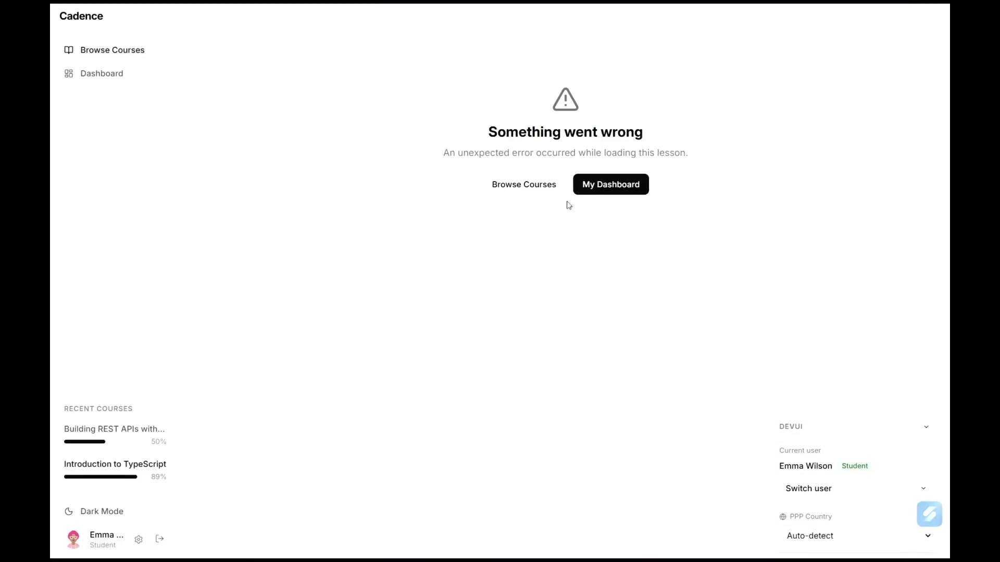
01:12:19 ↗Matt Pocock · 主讲不记得具体是哪条了，但大家明白问题。就不让你们一直看我验收了。重新打开项目。这里必须人工 QA，因为 QA 是把我的判断和品味重新加回代码库的地方。有些团队希望连想法生成、研究、原型、验收都自动化，我觉得最后容易得到缺少品味、质量差、甚至不能正常工作或不符合意图的应用。构建产品仍需要人的触感，否则只有粗糙产物。我们要的是高质量，这就是人工验收的目的。
4. 深模块与代码库理解
01:13:39 ↗Matt Pocock · 主讲最后讲两件事：如果已有代码库很糟、很复杂，AI 和人进去都干不好，该怎样改；以及我自己的并行配置。先讲坏代码。John Ousterhout 在《软件设计的哲学》里谈过理想模块。假设图上每个方块是一份文件，各自导出内容供其他文件使用，彼此又有一些奇怪依赖：这个文件依赖那个，另一个又依赖这里。
01:14:49 ↗Matt Pocock · 主讲如果文件都很小，各自导出的东西又没隐藏多少功能，Ousterhout 会把它们叫浅模块：很多零碎小块。AI 很难导航，因为它不理解整个依赖关系，必须逐个追踪“这个依赖那个，那个又依赖另一个”。测试边界也难选。要给每个模块、每个小函数分别画一圈吗？那通常不是好办法。
01:15:46 ↗Matt Pocock · 主讲还是把相关模块一大组包起来，祈祷它们能一起工作？我认为很多坏测试，就是 AI 把每个微小函数单独包进测试边界，只验证各自能运行。但调用它们的上层可能把顺序弄错，或者上层自身有值得测试的逻辑。再测上层，又要不要 mock 下面两个模块？所以必须把代码库设计成容易测试的样子。容易测试，反馈回路就更好，AI 才会干得更好。
01:16:52 ↗Matt Pocock · 主讲好的代码库应该更像“深模块”：暴露小而简单的接口，内部容纳大量功能。这样容易在整个模块外画一个测试边界，一次验证很多有意义的行为，而调用者只需面对简单接口。深模块优于一堆浅模块。不加引导、不仔细看着 AI，它往往会生成后面那种浅而散的代码，所以必须主动指导。这也解释了为什么 PRD 里要专门写模块。
01:18:17 ↗Matt Pocock · 主讲PRD 在 issues 里的游戏化系统文件。这里明确说，游戏化服务是新的深模块，有特定接口，围绕它测试；还要修改进度服务、课程路由、仪表盘路由等。我非常明确会编辑哪些模块，而且规划和实现时始终在脑子里保留模块地图。这不仅更容易测试，还有个认知技巧。我喝口水，先问：用了 AI 后感觉更辛苦的人举手。觉得自己反而不如以前了解代码库的人举手。
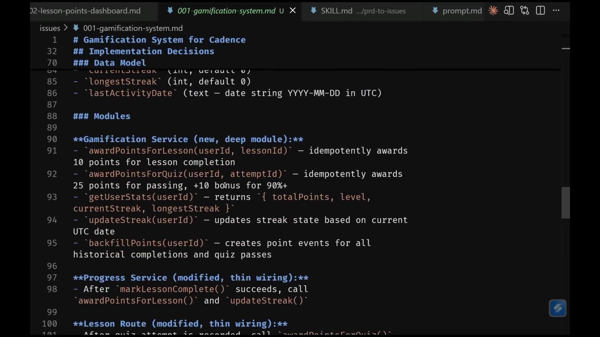
01:19:43 ↗Matt Pocock · 主讲这是真问题。速度更快、委派更多，会让我们失去对代码库的感觉；没有这种感觉，就难以改进它，相当于把系统形状也外包给 AI，我不赞成。怎么既快，又不把脑子塞满？办法是自己设计模块接口，再委派内部实现。模块变成“灰盒”：知道它做什么、如何表现、边界是什么，不必掌握每个内部细节。我不一定需要审阅模块里的每一行，但必须知道它在特定条件下会有什么行为。
01:20:50 ↗Matt Pocock · 主讲这样我保留代码库的总体视图，理解各模块形状及接口，把内部委派出去，既不失去方向，也能保住理智。怎么把一堆浅模块变深？仓库里有个 Skill，名字就叫 Improve Codebase Architecture。我来运行。它扫描架构，寻找可以加深模块的地方，大家也能自己试。它曾在我那个课程视频管理应用里找到一个很好的例子：浏览器视频编辑器，这东西的工程难度很高。
01:22:14 ↗Matt Pocock · 主讲我希望把从前端到后端的一整条链路包成一个模块，能测试“前端按下按钮，后端确实发生相应行为”。借助两端类型之间的可辨识联合，我用这个 Skill 找到一种方式，把视频编辑器基础设施整理成能从外部测试的大模块。AI 能看、能修改、能测试整条流程，效果简直天壤之别。视频编辑器不给好测试，AI 很难改好。如果今天只带走一件事，就在自己仓库试试这个 Skill。它运行时再看 Slido。
01:23:16 ↗Matt Pocock · 主讲有人问有没有试过 Claude 的 auto mode，用来减少权限确认，稍后说。还会不会保留 Markdown 计划和事项作参考？假设一个想法变成 PRD，也已实现完成，有多少人会继续把它放在仓库？有多少人想尽快丢掉？这个问题没有明确答案。我担心的是，一个月后再改游戏化功能，Claude 找到老 PRD，以为找到了原始文档。
01:24:28 ↗Matt Pocock · 主讲但实际代码可能已经变得面目全非：名称、目录、甚至经过用户验证后的需求都变了。这是文档腐化，陈旧文档会误导 Agent。所以我倾向不把它留在活跃仓库里。我的工作流用 GitHub Issue，完成后直接关闭，想查仍可查，但状态清楚地表明它已结束。有人问 Steve 的 Beads 框架，我没试过，看起来是另一种管理看板和事项的方法，似乎不错，但没有亲自验证。现场还有问题吗？
01:25:34 ↗现场补充刚才你说 Markdown 文档会腐化，那迁移文件呢？数据库迁移完成之后，也会把它们压缩合并吗？
01:25:47 ↗Matt Pocock · 主讲你是说数据库迁移？
01:25:49 ↗现场补充对。
01:25:51 ↗Matt Pocock · 主讲我不知道，希望回答了你的问题，抱歉。认真说，数据库迁移不太一样，它是实际发生过哪些变化的运行记录，更确定。这个类比很有意思，但我不确定，之后可以再聊。这也是承认我不知道的一种说法。
01:26:12 ↗现场补充你提到 PRD 写完之后不会审阅。
01:26:16 ↗Matt Pocock · 主讲各位稍等，我在努力听这位的问题。
01:26:18 ↗现场补充既然不读，是否考虑让 ChatGPT Pro 之类做深度思考，把 PRD 交给它，让它判断能否理解？大概花一个小时。
01:26:31 ↗Matt Pocock · 主讲也就是，早期规划是否应该不断优化计划？很多人这么做，我理解这个想法。但当你已经和 LLM 达成理解、清楚终点，也写好旅程和目标文档，还要不要把 PRD 优化到尽善尽美？我觉得收益有限。旅程只是在提示方向，真正该投入精力的是 QA。你当然可以让它在后台继续优化，但我的经验是榨不出太多收益。最重要的是最初通过盘问和 AI 对齐。再来最后一个问题。
5. 编码标准、并行执行与总结
01:27:42 ↗现场补充怎样让它按你的方式写代码，比如使用指定的库，使代码审查时至少看起来熟悉？
01:27:52 ↗Matt Pocock · 主讲这和之前的编码标准问题一样。大体有 push 和 pull 两种方式。“推”是主动把指令塞给模型，比如在 CLAUDE.md 写“像海盗一样说话”，每次都带过去。“拉”是给 Agent 一个按需获取信息的机会，比如 Skill 放在仓库里，简介告诉它需要时可以读取。我现在对于实现器、审查器和编码标准的理解是这样。
01:29:10 ↗Matt Pocock · 主讲实现器应能按需拉取标准：有疑问时自己找答案。后面的自动审查器，则应主动推入标准，明确告诉它“这是编码规范，检查代码是否符合”。让审查器同时拿到代码和标准，直接比较。趁这个话题，我演示自动化版本。我最近花大约一周做了 Sandcastle，因为不满意当时无人值守运行 Agent 的选项。它是一个运行这些循环的 TypeScript 库：run 函数创建 worktree，把它放进 Docker，再运行提示词。worktree 本质上对应 Git 分支，稍后可以合并。
01:30:29 ↗Matt Pocock · 主讲它有不错的查看界面，也能很方便地让多个 Agent 并行。打开 Sandcastle 的 main.ts。前面看的是串行 Ralph，现在变成并行：先由 planner 读取待办列表和计划提示词，选择可以并行的几条事项。记得看板上的阻塞关系吗？它会算出哪些能同阶段进行。忽略中间粘合代码，每项有 GitHub Issue 标题和工作分支。然后每项创建独立沙箱，传入编号、标题、分支，运行实现器；如果产生提交，就审查那些提交。
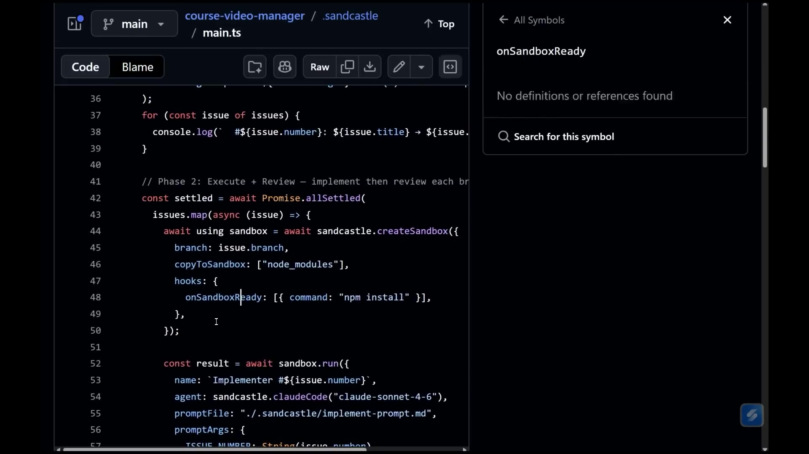
01:31:51 ↗Matt Pocock · 主讲接着把提交交给 merger Agent。它拿合并提示词、各分支、各事项，负责合并；合并产生类型或测试问题时，再解决它们。这套流程我用了有一阵，适用于大部分项目，我的体验很好。有兴趣可以看 Sandcastle。回到刚才问题：给 reviewer 主动推入标准，让 implementer 按需拉取。我用 Sonnet 实现，用 Opus 审查，因为审查时更需要强推理。我们在很多任务间来回切，最后回到架构改进。
01:33:01 ↗Matt Pocock · 主讲扫描终于完成，发现了多组可共同测试的架构改进候选，比如测验评分服务，还有顺序调整逻辑的提取。它会解释这些模块为什么耦合、依赖属于什么类型。比如可在内存 SQLite 测试数据库里替换的本地依赖；测验评分服务目前零测试，这是最大缺口。Improve Codebase Architecture 的结果大致如此。名义上还剩十七分钟，但我已经很累了，大家也差不多。先收束一下，我会留到结束，愿意提问可以过来。
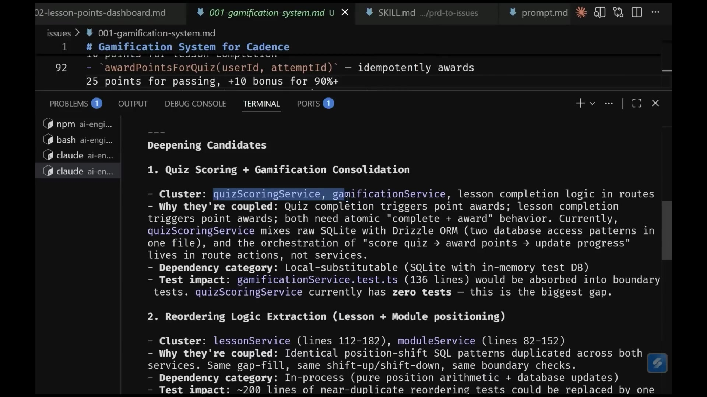
01:34:10 ↗Matt Pocock · 主讲整个流程中，我们始终记着代码库的形状。它不是规格到代码的编译器，也不是任由 AI 不断吐代码。我们有意识地决定模块和架构，通过盘问把想法敲清楚，与 AI 尽量对齐；不把过多精力花在反复读 PRD 上，而是转成可并行的事项，让 Agent 实现，再认真验收、审查，继续回到实现。有一点刚才没强调：QA 的目的之一，就是为看板产生新事项。它实现时，你也可以验收已有结果、增加缺陷和阻塞关系，看板可以不断延伸。
01:35:07 ↗Matt Pocock · 主讲等代码和结果让自己满意，再交给团队做完整审查。到那之前，可以是一位或几位开发者管理这一轮，怎样合回团队流程由你们决定。这一切都能定制，只是我发现有效的方法，我并不是要兜售唯一正确路线。只留一条建议的话，就去买那些老软件工程书。我读来很受启发，AI 时代以前的写作总是很有意思，几乎每页都能找到有用的东西。谢谢大家忍受这里的高温，希望体温很快恢复，谢谢。